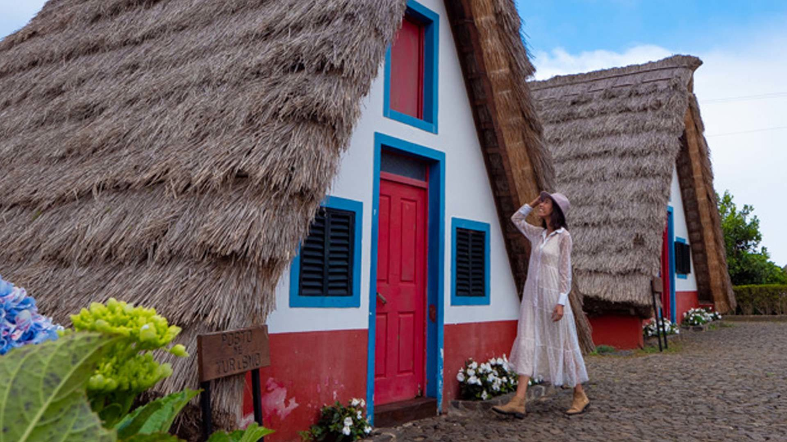
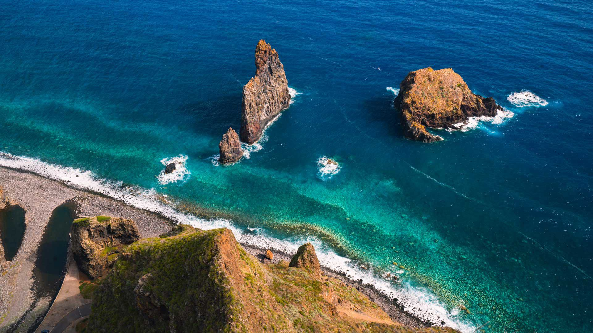

The North Coast of Madeira undeniably has some of the island's most spectacular sceneries.
Here, it feels like Nature has spared no effort and has combined mountains, forests, cliffs and sea in a breathtaking way. A composition of natural beauty, responsible for displaying unmistakable images, along the entire coastline of the parishes that make up the Municipalities of S. Vicente, Santana and Porto Moniz.
Throughout the three municipalities, there are many natural viewpoints that give access to wide and photogenic scenery, such as the Cabanas viewpoint, which offers visitors a unique view over Arco de São Jorge and, on clear days, over the island of Porto Santo. Besides this, on the coastline there are plenty of volcanic caves, such as those of São Vicente, or natural pools, such as those of Porto Moniz - the ex-libris of this picturesque town.
The Laurissilva Forest - a real natural treasure that occupies around 15,000 hectares of the Island of Madeira (20% of the territory) - also contributes to the spectacular nature of the North Coast, where it's more expressive, given the abundance of water that characterises this region.
 Visiting the municipality of Porto Moniz means being in deep connection with the sea of the north of the island. Waterfalls, beaches, natural pools formed by volcanic rocks and viewpoints overlooking the sea show the close relationship between this place and the ocean. From sea to mountain, Porto Moniz includes breathtaking images.
 São Vicente is a municipality characterised by the tones of green of its abundant vegetation, carved by volcanic forces and erosion on its beautiful slopes. Distributed throughout its three parishes, there are many gardens, numerous water courses, trails, viewpoints, natural caves, an important historical heritage and a large extension of the Laurissilva Forest.